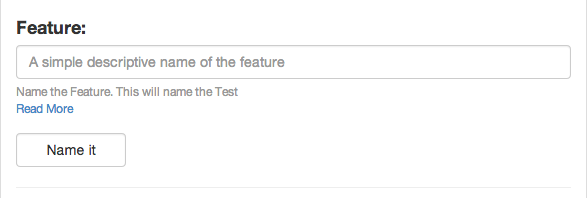

All test must have a Feature. this is a how a test will typically layout.
``` Feature: Your Overall Test name like User Interaction
Scenario: User Edits a page Scenario: User Deletes a page
```
So the Feature will summarize this.
You have 1 Feature per test. A feature can have tags (more on tags)[http://alnutile.github.io/behat_editor/tags.html]
More Reading